![In the Mound layering method the lower branch of the plant is bent to the ground. Part of the stem is buried in the soil and the tip of the branch is exposed above the soil. A picture of a bark tissue removed plant is given. In the first step of Air layering the stem tissue is removed at the nodal region. A picture of a moist soil applied plant is given. This is the second method of Air layering. Hormones are applied to the nodal region which promotes rooting. A picture of a polythene tied plant is given. In the third step of Air layering the moist soil is covered with a polythene sheet to retain moisture.](images/image34.png)
1 point 1 Asexual reproduction
1 point 2 Vegetative reproduction
1 point 3 Sexual Reproduction
1 point 4 Pre-fertilization structure and events
1 point 5 Fertilization
1 point 6 Post fertilization structure and events
1 point 7 Apomixis
1 point 8 Polyembryony
1 point 9 Parthenocarpy
One of the essential features of all living things on the earth is reproduction. Reproduction is a vital process for the existence of a species and it also brings suitable changes through variation in the offsprings for their survival on earth. Plant reproduction is important not only for its own survival but also for the continuation and existence of all other organisms since the latter directly or indirectly depend on plants. Reproduction also plays an important role in evolution.
In this unit let us learn in detail about reproduction in plants.
Box Item: Panchanan Maheswari (1904-1966): Professor P. Maheshwari was an eminent Botanist who specialised in plant embryology, morphology and anatomy. In 1934, he became the Fellow of Indian Academy of Science. He published the book titled "An introduction to the Embryology of Angiosperms" in 1950. He established the International Society for Plant Morphologists, in 1951.
Basically, reproduction occurring in organisms fall under two major categories
1. Asexual reproduction
2. Sexual reproduction.
The reproduction method which helps to perpetuate its own species without the involvement of gametes is referred to as asexual reproduction. From Unit one of Class XI we know that reproduction is one of the attributes of living things and the different types of reproduction have also been discussed. Lower plants, fungi and animals show different methods of asexual reproduction. Some of the methods include, formation of Conidia (Aspergillus and Penicillium); Budding (Yeast and Hydra); Fragmentation (Spirogyra); production of Gemma (Marchantia); Regeneration (Planaria) and Binary fission (Bacteria) (Refer chapter one of Unit one of class XI). The individuals formed by this method is morphologically and genetically identical and are called clones. Higher plants also reproduce asexually by different methods which are given below:
Natural vegetative reproduction is a form of asexual reproduction in which a bud grows and develops into a new plant. The buds may be formed in organs such as root, stem and leaf. At some stage, the new plant gets detached from the parent plant and starts to develop into a new plant. Some of the organs involved in the vegetative reproduction also serve as the organs of storage and perennation. The unit of reproductive structure used in propagation is called reproductive propagules or diaspores. Some of the organs that help in vegetative reproduction are given in Figure 1.1.
A. Vegetative reproduction in root
The roots of some plants develop vegetative or adventitious buds on them. Example Murraya, Dalbergia and Millingtonia. Some tuberous adventitious roots apart from developing buds also store food. Example Ipomoea batatus and Dahlia. Roots possessing buds become detached from the parent plant and grow into independent plant under suitable condition.
Box item: Activity
Visit to a vegetable market and classify the vegetables into root, stem or leaf based on their utility and identify how many of them can be propagated through asexual methods.
Box Item: Do You Know?
Scourge of water bodies /Water hyacinth (Eichhornia crassipes) is an invasive weed on water
bodies like ponds, lakes and reservoirs. It is popularly called "Terror of Bengal". It spreads rapidly through offsets all over the water body and depletes the dissolved oxygen and causes death of other aquatic organisms.
B. Vegetative reproduction in stem
From the Unit 3 of class XI (Vegetative morphology) you are familiar with the structure of various underground stem and sub aerial stem modifications. These include rhizome (Musa paradisiaca, Zingiber officinale and Curcuma longa); corm (Amorphophallus and Colocasia); tuber (Solanum tuberosum); bulb (Allium cepa and Lillium) runner (Centella asiatica); stolon (Mentha, and Fragaria); offset (Pistia, and Eichhornia); sucker (Chrysanthemum) and bulbils (Dioscorea and Agave). The axillary buds from the nodes of rhizome and eyes of tuber give rise to new plants.
C. Vegetative reproduction in leaf
In some plants adventitious buds are developed on their leaves. When they are detached from the parent plant they grow into new individual plants. Examples: Bryophyllum, Scilla, and Begonia. In Bryophyllum, the leaf is succulent and notched on its margin. Adventious buds develop at these notches and are called epiphyllous buds. They develop into new plants forming a root system and become independent plants when the leaf gets decayed. Scilla is a bulbous plant and grows in sandy soils. The foliage leaves are long and narrow and epiphyllous buds develop at their tips. These buds develop into new plants when they touch soil.
Figures 1.1 a to k Natural methods of Vegetative reproduction in plants
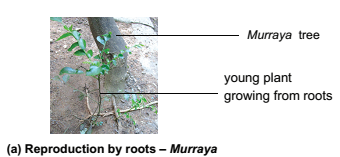
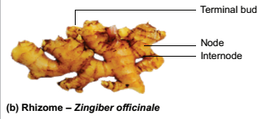
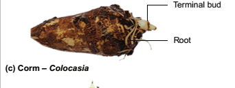
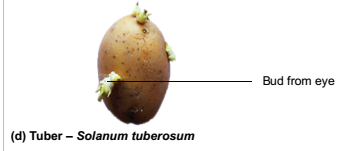
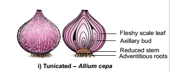
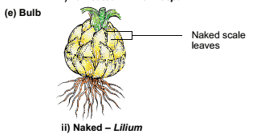
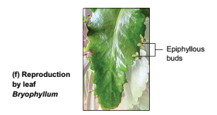
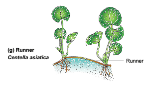
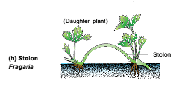
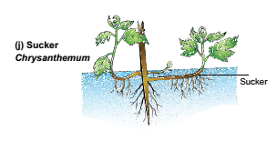
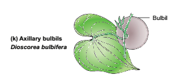
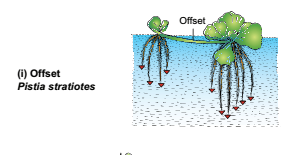
Advantages of natural vegetative reproduction
Disadvantage of natural vegetative reproduction
Apart from the above-mentioned natural methods of vegetative reproduction, a number of methods are used in agriculture and horticulture to propagate plants from their parts. Such methods are said to be artificial propagation. Some of the artificial propagation methods have been used by man for a long time and are called conventional methods. Now-a-days, technology is being used for propagation to produce large number of plants in a short period of time. Such methods are said to be modern methods.
Roman letter one: Conventional methods
The common methods of conventional propagation are cutting, grafting and layering.
small a: Cutting: It is the method of producing a new plant by cutting the plant parts such as root, stem and leaf from the parent plant. The cut part is placed in a suitable medium for growth. It produces root and grows into a new plant. Depending upon the part used it is called as root cutting (Malus), stem cutting (Hibiscus, Bougainvillea and Moringa) and leaf cutting (Begonia, Bryophyllum). Stem cutting is widely used for propagation.
small b: Grafting: In this, parts of two different plants are joined so that they continue to grow as one plant. Of the two plants, the plant which is in contact with the soil is called stock and the plant used for grafting is called scion (Figure 1.2 a). Examples are Citrus, Mango and Apple. There are different types of grafting based on the method of uniting the scion and stock. They are bud grafting, approach grafting, tongue grafting, crown grafting and wedge grafting.
small roman letter one: Bud grafting: A T- shaped incision is made in the stock and the bark is lifted. The scion bud with little wood is placed in the incision beneath the bark and properly bandaged with a tape.
small roman letter two: Approach grafting: In this method both the scion and stock remain rooted. The stock is grown in a pot and it is brought close to the scion. Both of them should have the same thickness. A small slice is cut from both and the cut surfaces are brought near and tied together and held by a tape. After 1-4 weeks the tip of the stock and base of the scion are cut off and detached and grown in a separate pot.
small roman letter three:Tongue grafting: A scion and stock having the same thickness is cut obliquely and the scion is fit into the stock and bound with a tape.
small roman letter four: Crown grafting: When the stock is large in size scions are cut into wedge shape and are inserted on the slits or clefts of the stock and fixed in position using graft wax.
small roman letter five: Wedge grafting: In this method a slit is made in the stock or the bark is cut. A twig of scion is inserted and tightly bound so that the cambium of the two is joined.
Box item:
Activity: Visit a nursery, observe the method of grafting, layering and do these techniques with plants growing in your school or home.
C. Layering:
In this method, the stem of a parent plant is allowed to develop roots while still intact. When the root develops the rooted part is cut and planted to grow as a new plant. Examples: Ixora and Jasminum. Mound layering and Air layering are few types of layering (Figure one point two b).
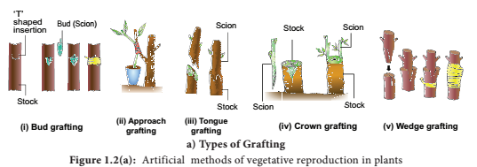
(1) Mound layering: This method is applied for the plants having flexible branches. The lower branch with leaves is bent to the ground and part of the stem is buried in the soil and tip of the branch is exposed above the soil. After the roots emerge from the part of the stem buried in the soil, a cut is made in parent plant so that the buried part grows into a new plant.
small roman letter two. Air layering: In this method the stem is girdled at nodal region and hormones are applied to this region which promotes rooting. This portion is covered with damp or moist soil using a polythene sheet. Roots emerge in these branches after 2-4 months. Such branches are removed from the parent plant and grown in a separate pot or ground.
Advantages of conventional methods
Disadvantages of conventional methods
In previous classes reproduction in lower plants like algae and bryophytes was discussed in detail. Sexual reproduction involves the production and fusion of male and female gametes. The former is called gametogenesis and the latter is the process of fertilization. Let us recall the sexual reproduction in algae and bryophytes. They reproduce by the production of gametes which may be motile or non-motile depending upon the species. The gametic fusion is of three types (Isogamy, Anisogamy and Oogamy). In algae external fertilization takes place whereas in higher plants internal fertilization occurs.
Flower
A flower is viewed in multidimensional perspectives from time immemorial. It is an inspirational tool for the poets. It is a decorative material for all the celebrations. In Tamil literature the five lands are denoted by different flowers. The flags of some countries are embedded with flowers. Flowers are used in the preparation of perfumes. For a Morphologist, a flower is a highly condensed shoot meant for reproduction. As you have already learned about the parts of a flower in Unit II of Class XI, let us recall the parts of a flower. A Flower possesses four whorls-Calyx, Corolla, Androecium and Gynoecium. Androecium and Gynoecium are essential organs (Figure 1.3). The process or changes involved in sexual reproduction of higher plants include three stages. They are Pre-fertilization, Fertilization and Post fertilization changes. Let us discuss these events in detail.
The hormonal and structural changes in plant lead to the differentiation and development of floral primordium. The structures and events involved in pre-fertilization are given below.
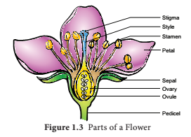
Androecium is made up of stamens. Each stamen possesses an anther and a filament. Anther bears pollen grains which represent the male gametophyte. In this chapter we shall discuss the structure and development of anther in detail.
Development of anther: A very young anther develops as a homogenous mass of cells surrounded by an epidermis. During its development, the anther assumes a four-lobed structure. In each lobe, a row or a few rows of hypodermal cells becomes enlarged with conspicuous nuclei. This functions as archesporium. The archesporial cells divide by periclinal divisions to form primary parietal cells towards the epidermis and primary sporogenous cells towards the inner side of the anther. The primary parietal cells undergo a series of periclinal and anticlinal division and form 2-5 layers of anther walls composed of endothecium, middle layers and tapetum, from periphery to centre.
Microsporogenesis: The stages involved in the formation of haploid microspores from diploid microspore mother cell through meiosis is called Microsporogenesis. The primary sporogenous cells directly, or may undergo a few mitotic divisions to form sporogenous tissue. The last generation of sporogenous tissue functions as microspore mother cells. Each microspore mother cell divides meiotically to form a tetrad of four haploid microspores (microspore tetrad). The microspore tetrad may be arranged in a tetrahedral, decussate, linear, T shaped or isobilateral manner. Microspores soon separate from one another and remain free in the anther locule and develop into pollen grains. The stages in the development of microsporangia is given in Figure 1.4. In some plants, all the microspores in a microsporangium remain held together called pollinium. Example: Calotropis. Compound pollen grains are found in Drosera and Drymis.
![1.A picture of Anther primordium is given. 2.A picture of archesporial cell is given. It explains the differentiation of archesporial cell. The anther assumes a four lobed structure. 3.Formation of parietal and sporogenous cell pictures is given. The archesporial cells divide by periclinal divisions to form primary parietal cells towards the epidermis and primary sporogenous cells towards the inner side of the anther. 4.Formation of wall layers in Anther picture is given. The primary parietal cells undergo a series of periclinal and anticlinal division and form 2-5 layers of anther walls. 5.The Sporogenous stage of Anther is shown here. In this stage 2 - 5 layers of anther walls differentiated into Epidermis, Middle layers, Tapetum and sporogenous cell. 6.Pollen tetrad stage of Anther is shown here. In this stage pollen tetrad, Stomium and connective are also formed. 7.In the Microspore stage the pollen tetrads transform into Microspore.](images/image16.png)
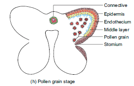
Figure 1.4 Stages in the development of anther haploid microspores (microspore tetrad).
The microspore tetrad may be arranged in a tetrahedral, decussate, linear, T shaped or isobilateral manner. Microspores soon separate from one another and remain free in the anther locule and develop into pollen grains. The stages in the development of microsporangia is given in Figure 1.4. In some plants, all the microspores in a microsporangium remain held together called pollinium. Example: Calotropis. Compound pollen grains are found in Drosera and Drymis
T.S. of Mature anther
Transverse section of mature anther reveals the presence of anther cavity surrounded by an anther wall. It is bilobed, each lobe having 2 thecae (dithecous). A typical anther is tetrasporangiate. The T.S. of Mature anther is given in Figure 1.5.
Box item: Activity
Collect buds and opened flowers of Datura metel. Dissect the stamens, separate the anthers and take thin transverse sections and observe the structure under the microscope Record the various stages of anther development from your observations.
1. Anther wall
The mature anther wall consists of the following layers
a. Epidermis
b. Endothecium
c. Middle layers
d. Tapetum.
a. Epidermis: It is single layered and protective in function. The cells undergo repeated anticlinal divisions to cope up with the rapidly enlarging internal tissues.
b. Endothecium: It is generally a single layer of radially elongated cells found below the epidermis. The inner tangential wall develops bands (sometimes radial walls also) of α cellulose (sometimes also slightly lignified). The cells are hygroscopic. In the anthers of aquatic plants, saprophytes, cleistogamous flowers and extreme parasites endothecial differentiation is absent. The cells along the junction of the two sporangia of an anther lobe lack these thickenings. This region is called stomium. This region along with the hygroscopic nature of endothecium helps in the dehiscence of anther at maturity.
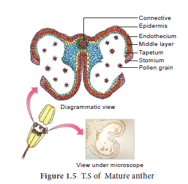
c. Middle layers: Two to three layers of cells next to endothecium constitute middle layers. They are generally ephemeral. They disintegrate or get crushed during maturity.
d. Tapetum: It is the innermost layer of anther wall and attains its maximum development at the tetrad stage of microsporogenesis. It is derived partly from the peripheral wall layer and partly from the connective tissue of the anther lining the anther locule. Thus, the tapetum is dual in origin. It nourishes the developing sporogenous tissue, microspore mother cells and microspores. The cells of the tapetum may remain uninucleate or may contain more than one nucleus or the nucleus may become polyploid. It also contributes to the wall materials, sporopollenin, pollen Kitt, trephine and number of proteins that control incompatibility reaction. Tapetum also controls the fertility or sterility of the microspores or pollen grains.
There are two types of tapetum based on its behaviour. They are:
Secretory tapetum (parietal/glandular/cellular): The tapetum retains the original position and cellular integrity and nourishes the developing microspores.
Invasive tapetum (peri plasmodial): The cells lose their inner tangential and radial walls and the protoplast of all tapetal cells coalesces to form a peri plasmodium.
Functions of Tapetum:
• It supplies nutrition to the developing microspores.
• It contributes sporopollenin through ubisch bodies thus plays an important role in pollen wall formation.
• The pollen Kitt material is contributed by tapetal cells and is later transferred to the
pollen surface.
• Exine proteins responsible for ‘rejection reaction’ of the stigma are present in the cavities of the exine. These proteins are derived from tapetal cells.
Box items: Do you know
Many botanists speak of a third type of tapetum called amoeboid, where the cell wall is not lost. The cells protrude into the anther cavity through an amoeboid movement. This type is often associated with male sterility and should not be confused with periplasmodial type.
2. Anther Cavity: The anther cavity is filled with microspores in young stages or with pollen grains at maturity. The meiotic division of microspore mother cells gives rise to microspores which are haploid in nature.
3. Connective tissue: It is the column of sterile tissue surrounded by the anther lobe. It possesses vascular tissues. It also contributes to the inner tapetum.
Microspores and pollen grains
Microspores are the immediate product of meiosis of the microspore mother cell whereas the pollen grain is derived from the microspore. The microspores have protoplast surrounded by a wall which is yet to be fully developed. The pollen protoplast consists of dense cytoplasm with a centrally located nucleus. The wall is differentiated into two layers, namely, inner layer called intine and outer layer called exine. Intine is thin, uniform and is made up of pectin, hemicellulose, cellulose and callose together with proteins. Exine is thick and is made up of cellulose, sporopollenin and pollen Kitt. The exine is not uniform and is thin at certain areas. When these thin areas are small and round it is called germ pores or when elongated it is called furrows. It is associated with germination of pollen grains. The sporopollenin is generally absent in germ pores. The surface of the exine is either smooth or sculptured in various patterns (rod like, grooved, warty, punctuate extra) The sculpturing pattern is used in the plant identification and classification.
Shape of a pollen grain varies from species to species. It may be globose, ellipsoid, fusiform, lobed, angular or crescent shaped. The size of the pollen varies from 10 micrometres in Myosotis to 200 micrometres in members of the family Cucurbitaceae and Nyctaginaceae.
Box item: do you know?
Palynology is the study of pollen grains It helps to identify the distribution of coal and to locate oil fields. Pollen grains reflect the vegetation of an area. Liquid nitrogen (mines
196 degree celsius) is used to preserve pollen in viable condition for prolonged duration. This technique is called cryopreservation and is used to store pollen grains (pollen banks) of economically important crops for breeding programmes.
The wall material sporopollenin is contributed by both pollen cytoplasm and tapetum. It is derived from carotenoids. It is resistant to physical and biological decomposition. It helps to withstand high temperature and is resistant to strong acid, alkali and enzyme action. Hence, it preserves the pollen for long periods in fossil deposits, and it also protects pollen during its journey from anther to stigma.
Pollen Kitt is contributed by the tapetum and coloured yellow or orange and is chiefly made of carotenoids or flavonoids. It is an oily layer forming a thick viscous coating over pollen surface. It attracts insects and protects damage from UV radiation.
Box item: Do you know?
Beepollen is a natural substance and contains high protein, carbohydrate, trace amount of minerals and vitamins. Therefore, it is used as dietary supplement and is sold as pollen tablets and syrups. Further, it increases the performance of athletes, race horses and also heals the wounds caused by burns. The study of honey pollen is called Mellitopalynology.
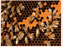
Development of Male gametophyte:
The microspore is the first cell of the male gametophyte and is haploid. The development of male gametophyte takes place while they are still in the microsporangium. The nucleus of the microspore divides mitotically to form a vegetative and a generative nucleus. A wall is laid around the generative nucleus resulting in the formation of two unequal cells, a large irregular nucleus bearing with abundant food reserve called vegetative cell and a small generative cell. Generally, at these 2 celled stage, the pollens are liberated from the anther. In some plants the generative cell again undergoes a division to form two male gametes. The pollen is liberated at these 3 celled stage. In 60% of the angiosperms pollen is liberated in 2 celled stage. Further, the growth of the male gametophyte occurs only if the pollen reaches the right stigma. The pollen on reaching the stigma absorbs moisture and swells. The intine grows as pollen tube through the germ pore. In case the pollen is liberated at 2 celled stage the generative cell divides in the pollen into 2 male cells (sperms) after reaching the stigma or in the pollen tube before reaching the embryo sac. The stages in the development of male gametophyte is given in Figure 1.6.
![1.Development of male gametophyte image is given here. 2.Pollen Grain consists of Exine, Intine Nucleus and Germ pore. 3.In the developmental stage of pollen grain two vacuoles are formed. 4.In the next stage vacuoles coincide and the nucleus divides into two. 5.On division vegetative cell and generative cell are formed. The Generative cell is embedded in the cytoplasm of Vegetative cell. 6.The pollen tube is formed It contains generative nucleus and tube nucleus. 7.After the formation of the Pollen tube the generative nucleus divides whereas the tube nucleus remains the same. 8.From the divided generative nucleus male gametes are formed.](images/image5.png)
The gynoecium represents the female reproductive part of the flower. The word gynoecium represents one or more pistils of a flower. The word pistil refers to the ovary, style and stigma. A pistil is derived from a carpel. The word ovary represents the part that contains the ovules. The stigma serves as a landing platform for pollen grains. The style is an elongated slender part beneath the stigma. The basal swollen part of the pistil is the ovary. The ovules are present inside the ovary cavity (locule)on the placenta. Gynoecium (carpel) arises as a small papillate outgrowth of meristematic tissue from the growing tip of the floral primordium. It grows actively and soon gets differentiated into ovary, style and stigma. The ovules or megasporangia arise from the placenta. The number of ovules in an ovary may be one (paddy, wheat and mango) or many (papaya, water melon and orchids).
Structure of ovule (Megasporangium):
Ovule is also called megasporangium and is protected by one or two covering called integuments. A mature ovule consists of a stalk and a body. The stalk or the funiculus (also called funicle) is present at the base and it attaches the ovule to the placenta. The point of attachment of funicle to the body of the ovule is known as hilum. It represents the junction between ovule and funicle. In an inverted ovule, the funicle is adnate to the body of the ovule forming a ridge called raphe. The body of the ovule is made up of a central mass of parenchymatous tissue called nucellus which has large reserve food materials. The nucellus is enveloped by one or two protective coverings called integuments. Integument
encloses the nucellus completely except at the top where it is free and forms a pore called micropyle. The ovule with one or two integuments are said to be unitegmic or bitegmic ovules respectively. The basal region of the body of the ovule where the nucellus, the integument and the funicle meet or merge is called as chalaza. There is a large, oval, sac-like structure in the nucellus toward the micropylar end called embryo sac or female gametophyte. It develops from the functional megaspore formed within the nucellus. In some species (unitegmic tenuinucellate) the inner layer of the integument may become specialized to perform the nutritive function for the embryo sac and is called as endothelium or integumentary tapetum (Example: Asteraceae). There are two types of ovules based on the position of the sporogenous cell. If the sporogenous cell is hypodermal with a single layer of nucellar tissue around it is called tenuinucellate type. Normally tenuinucellate ovules have very small nucellus. Ovules with sub hypodermal sporogenous cell is called crassinucellate type. Normally these ovules have fairly large nucellus. Group of cells found at the base of the ovule between the chalaza and embryo sac is called hypostases and the thick-walled cells found above the micropylar end
above the embryo sac is called epistase. The structure of ovule is given in Figure 1.7.
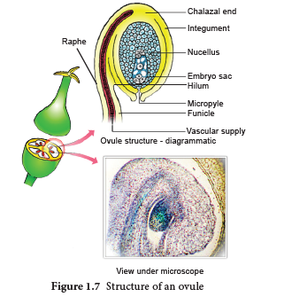
Types of Ovules
The ovules are classified into six main types based on the orientation, form and position of the micropyle with respect to funicle and chalaza. Most important ovule types are orthotropous, anatropous, hemianatropous and campylotropous. The types of ovules is given in Figure 1.8.
Orthotropous: In this type of ovule, the micropyle is at the distal end and the micropyle,
the funicle and the chalaza lie in one straight vertical line. Examples: Piperaceae, Polygonaceae
Anatropous: The body of the ovule becomes completely inverted so that the micropyle and funiculus come to lie very close to each other. This is the common type of ovules found in dicots and monocots.
Hemianatropous: In this, the body of the ovule is placed transversely and at right angles to the funicle. Example: Primulaceae.
Campylotropous:
The body of the ovule at the micropylar end is curved and more or less bean shaped. The embryo sac is slightly curved. All the three, hilum, micropyle and chalaza are adjacent to one another, with the micropyle oriented towards the placenta. Example: Leguminosae In addition to the above main types there are two more types of ovules they are,
Amphitropous: The distance between hilum and chalaza is less. The curvature of the ovule leads to horse-shoe shaped nucellus. Example: some Alismataceae.
Circinotropous: Funiculus is very long and surrounds the ovule. Example: Cactaceae
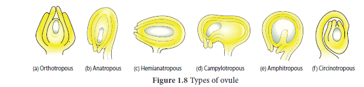
Megasporogenesis:
The process of development of a megaspore from a megaspore mother cell is called megasporogenesis.
As the ovule develops, a single hypodermal cell in the nucellus becomes enlarged and functions as archesporium. In some plants, the archesporial cell may directly function as megaspore mother cell. In others, it may undergo a transverse division to form outer primary parietal cell and inner primary sporogenous cell. The parietal cell may remain undivided or divide by few periclinal and anticlinal divisions to embed the primary sporogenous cell deep into the nucellus. The primary sporogenous cell functions as a megaspore mother cell. The megaspore mother cell (MMC) undergoes meiotic division to form four haploid megaspores. Based on the number of megaspores that develop into the Embryo sac, we have three basic types of development: monosporic, bisporic and tetrasporic. The megaspores are usually arranged in a linear tetrad. Of the four megaspores formed, usually the chalazal one is functional and other three megaspores degenerate. The functional megaspore forms the female gametophyte or embryo sac. This type of development is called monosporic development (Example: Polygonum). Of the four megaspores formed if two are involved in Embryo sac formation the development is called bisporic (Example: Allium). If all the four megaspores are involved in Embryo sac formation the development is called tetrasporic (Example: Peperomia). An ovule generally has a single embryo sac. The development of monosporic embryo sac (Polygonum type) is given in Figure 1.9.
Development of Monosporic embryo sac.
To describe the stages in embryo sac development and organization the simplest monosporic type of development is given below.
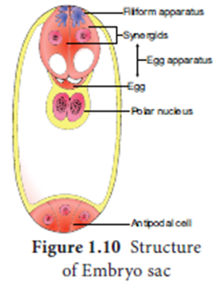
The functional megaspore is the first cell of the embryo sac or female gametophyte. The megaspore elongates along micropylar- chalazal axis. The nucleus undergoes a mitotic division. Wall formation does not follow the nuclear division. A large central vacuole now appears between the two daughter nuclei. The vacuole expands and pushes the nuclei towards the
opposite poles of the embryo sac. Both the nuclei divide twice mitotically, forming four nuclei at each pole. At this stage all the eight nuclei are present in a common cytoplasm (free nuclear division). After the last nuclear division, the cell undergoes appreciable elongation, assuming a sac-like appearance. This is followed by cellular organization of the embryo sac. Of the four nuclei at the micropylar end of the embryo sac, three organize into an egg apparatus, the fourth one is left free in the cytoplasm of the central cell as the upper polar nucleus. Three nuclei of the chalazal end form three antipodal cells whereas the fourth one functions as the lower polar nucleus. Depending on the plant the 2 polar nuclei may remain free or may fuse to form a secondary nucleus (central cell). The egg apparatus is made up of a central egg cell and two synergids, one on each side of the egg cell. Synergids secrete chemotropic substances that help to attract the pollen tube.
The special cellular thickening called filiform apparatus of synergids help in the absorption, conduction of nutrients from the nucellus to embryo sac. It also guides the pollen tube into the egg. Thus, a 7 celled embryo sac with 8 nuclei is formed. The structure of embryo sac is given in Figure 1.10.
![1.During the development o of Ovule and Embryo sac due to cell division the nucellus develops. 2.Archesporial cell is formed in this stage. 3.The Archesporial cell transforms into the Megaspore Mother cell. 4.The Megaspore Mother cell undergoes meiotic division and forms four haploid functional megaspores. 5.Among the 4 functional megaspores only one undergoes mitosis to form 2 - nucleate stage. The other three degenerates. 6.The mitotic division continues and forms the 4 - nucleate stage. 7.Finally after 3 consecutive divisions 8 - nucleate stage is formed.](images/image25.png)
Pollination is a wonderful mechanism which provides food, shelter etc., for the pollinating animals. Many plants are pollinated by a particular animal species and the flowers are modified accordingly and thus there exists a co-evolution between plants and animals. Let us imagine if pollination fails. Do you think there will be any seed and fruit formation? If not, what happens to pollinating organisms and those that depend on these pollinating organisms for the food? Here lies the significance of the process of pollination. The pollen grains produced in the anther will germinate only when they reach the stigma of the pistil. The reproductive organs, stamens and pistil of the flower are spatially separated, a mechanism which is essential for pollen grains to reach the stigma is needed. This process of transfer of pollen grains from the anther to a stigma of a flower is called pollination.
Pollination is a characteristic feature of spermatophyte (Gymnosperms and Angiosperms). Pollination in gymnosperms is said to be direct as the pollens are deposited directly on the exposed ovules, whereas in angiosperms it is said to be indirect, as the pollens are deposited on the stigma of the pistil. In majority of angiosperms, the flower opens and exposes its mature anthers and stigma for pollination. Such flowers are called chasmogamous and the phenomenon is chasmogamy. In other plants, pollination occurs without opening and exposing their sex organs. Such flowers are called cleistogamous and the phenomenon is cleistogamy.
Based upon the flower on which the pollen of a flower reaches, the pollination is classified into
two kinds, namely, self-pollination (Autogamy) and cross-pollination (Allogamy).
A. Self-pollination or Autogamy (Greek Auto = self, gamos = marriage):
According to a majority of Botanists, the transfer of pollen on the stigma of the same flower is called self-pollination or Autogamy. Self-pollination is possible only in those plants which bear bisexual flowers. In order to promote self- pollination, the flowers of the plants have several adaptations or mechanisms. They are:
ONE) Cleistogamy:
In cleistogamy (Greek Kleisto = closed. Gamos = marriage) flowers never open and expose the reproductive organs and thus the pollination is carried out within the closed flower. Commelina, Viola, Oxalis are some examples for cleistogamous flowers. In Commelina benghalensis, two types of flowers are producedaerial and underground flowers. The aerial flowers are brightly coloured, chasmogamous and insect pollinated. The underground flowers are borne on the subterranean branches of the rhizome that are dull, cleistogamous and self-pollinated and are not dependent on pollinators for pollination. (Figure 1.11).
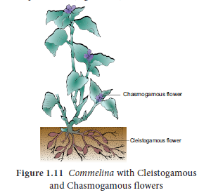
2. Homogamy: When the stamens and stigma of a flower mature at the same time it is said to be homogamy. It favours self-pollination to occur. Example: Mirabilis jalapa, Catharanthus roseus
3. Incomplete dichogamy: In dichogamous flowers the stamen and stigma of a flower mature at different time. Sometimes, the time of maturation of these essential organs overlap so that it becomes favourable for self-pollination.
B. Cross - pollination
It refers to the transfer of pollens on the stigma of another flower. The cross-pollination is of two types:
one). Geitonogamy: When the pollen deposits on another flower of the same individual plant, it is said to be geitonogamy. It usually occurs in plants which show monoecious condition. It is functionally cross-pollination but is generally similar to autogamy because the pollen comes from same plant.
2. Xenogamy: When the pollen (genetically different) deposits on another flower of a different plant of the same species, it is called as xenogamy.
Contrivances of cross-pollination
The flowers have several mechanisms to promote cross-pollination which are also called contrivances of cross-pollination or outbreeding devices. It includes the following.
1. Dicliny or Unisexuality:
When the flowers are unisexual only crosspollination is possible. There are two types.
1. Monoecious: Male and female flowers on the same plant. Coconut, Bitter gourd.
In plants like castor and maize, autogamy is prevented but geitonogamy takes place.
Dioecious: Male and female flowers on different plants. Borassus, Carica and Phoenix. Here both autogamy and geitonogamy are prevented.
2. Monocliny or Bisexuality
Flowers are bisexual and the special adaptation of the flowers prevents self-pollination.
1. Dichogamy: In bisexual flowers anthers and stigmas mature at different times, thus checking self-pollination. It is of two types.
a. Protandry: The stamens mature earlier than the stigmas of the flowers. Examples: Helianthus, Clerodendrum (Figure 1.12 a).
b. Protogyny: The stigmas mature earlier than the stamens of the flower. Examples: Scrophularia nodosa and Aristolochia bracteata (Figure 1.12 b).
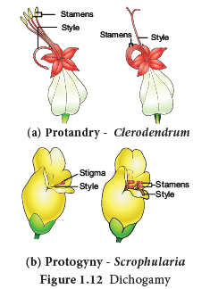
2. Herkogamy: In bisexual flowers the essential organs, the stamens and stigmas, are arranged in such a way that self-pollination becomes impossible. For example, in Gloriosa superba, the style is reflexed away from the stamens and in Hibiscus the stigmas project far above the stamens (Figure 1.13).
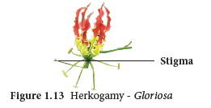
3. Heterostyly: Some plants produce two or three different forms of flowers that are different in their length of stamens and style. Pollination will take place only between organs of the same length. (Figure 1.14)
a. Distyly: The plant produces two forms of flowers, Pin or long style, long stigmatic papillae, short stamens and small pollen grains; Thrum-eyed or short style, small stigmatic papillae, long stamens and large pollen grains. Example: Primula (Figure 1.14a). The stigma of the Thrum-eyed flowers and the anther of the pin lie in same level to bring out pollination. Similarly, the anther of Thrum-eyed and stigma of pin ones is found in same height. This helps in effective pollination.
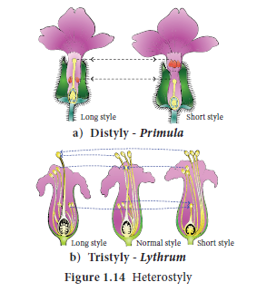
b.Tristyly:
The plant produces three kinds of flowers, with respect to the length of the style and stamens. Here,the pollen from flowers of one type can pollinate only the other two types
but not their own type. Example: Lythrum (Figure 1.14b).
4 Self sterility/ Self- incompatibility:
In some plants, when the pollen grain of a flower reaches the stigma of the same, it is unable to germinate or prevented to germinate on its own stigma. Examples: Abutilon, Passiflora. It is a genetic mechanism.
Agents of pollination
Pollination is affected by many agents like wind, water, insects etc. On the basis of the agents that bring about pollination, the mode of pollination is divided into abiotic and biotic. The latter type is used by majority of plants.
Abiotic agents
1. Anemophily - pollination by Wind
2. Hydrophily - pollination by Water
Biotic agents
1. Zoophily
Zoophily refers to pollination through animals
Abiotic agents
1. Anemophily: Pollination by wind. The wind pollinated flowers are called anemophilous. The wind pollinated plants are generally situated in wind exposed regions. Anemophily is a chance event. Therefore, the pollen may not reach the target flower effectively and are wasted during the transit from one flower to another. The common examples of wind pollinated flowers are - grasses, sugarcane, bamboo, coconut, palm, maize etc.,
Anemophilous plants have the following characteristic features:
Pollination in Maize (Zea mays): The maize is monoecious and unisexual. The male inflorescence (tassel) is borne terminally and female inflorescence (cob) laterally at lower levels. Maize pollens are large and heavy and cannot be carried by light breeze. However, the mild wind shakes the male inflorescence to release the pollen which falls vertically below. The female inflorescence has long stigma (silk) measuring upto 23 cm in length, which projects beyond leaves. The pollens drop from the tassel is caught by the stigma (Figure 1.15).
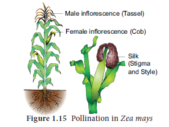
2. Hydrophily: Pollination by water is called hydrophily and the flowers pollinated by water are said to be hydrophilous (Example: Vallisneria, Hydrilla). Though there are a number of aquatic plants, only in few plants’ pollination takes place by water. The floral envelop of hydrophilous plants are reduced or absent. In water plants like Eichhornia and water lilly pollination takes place through wind or by insects. There are two types of hydrophily, Epihydrophily and Hypohydrophily. In most of the hydrophilous flowers, the pollen grains possess mucilage covering which protects them from wetting.
a. Epihydrophily: Pollination occurs at the water level. Examples: Vallisneria spiralis, Elodea.
Pollination in Vallisneria spiralis: It is a dioecious, submerged and rooted hydrophyte. The female plant bears solitary flowers which rise to the surface of water level using a long-coiled stalk at the time of pollination. A small cup shaped depression is formed around the female flower on the surface of the water. The male plant produces male flowers which get detached and float on the surface of the water. As soon as a male flower comes in contact with the female flower and pollination takes place, Stalk of the female flower coils and goes under water where fruits are produced. (Figure 1.16).
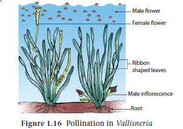
Box item: Activity
Visit to a nearby park and observe the different flowers. Record the adaptations or modifications found in the flowers for different types of pollination.
b. Hypohydrophily: Pollination occurs inside the water. Examples: Zostera marina and Ceratophyllum.
Zostera marina is a submerged marine sea grass and pollination takes place under water. The pollen grains are long, needle like. They are shed under water. The specific gravity of the pollen is same as that of sea water, so that, the pollen floats freely at any depth. The stigma is very large and long. The pollen comes in contact with the stigma and gets coiled around the stigma thus effecting pollination.

Biotic agent
Zoophily: Pollination by the agency of animals is called zoophily and flowers are said to be zoophilous. Animals that bring about pollination may be birds, bats, snails and insects. Of these, insects are well adapted to bring pollination. Larger animals like primates (lemurs), arboreal rodents, reptiles (gecko lizard and garden lizard) have also been reported as pollinators.
a. Ornithophily: Pollination by birds is called Ornithophily. Some common plants that are pollinated by birds are Erythrina, Bombax, Syzygium, Bignonia, Sterlitzia etc., Humming birds, sun birds, and honey eaters are some of the birds which regularly visit flowers and bring about pollination.
The ornithophilous flowers have the following characteristic features:
b. Cheiropterophily: Pollination carried out by bats is called cheiropterophily. Some of the common cheiropterophilous plants are Kigelia africana, Adansonia digitata, etc., Bats are nocturnal and are attracted by the odour of the flowers that open at or after dusk. The cheiropterophilous plants have flowers borne singly or in clusters quite away from the leaves and branches either on the long peduncle or on the trunk or branches. The flowers produce large quantities of nectar.
Pollination in Adansonia digitata: In this plant, the ball of stamens and the stigma project beyond the floral envelops. The bat holds the flower by clasping the stamen ball to its breast. While taking nectar its breast becomes laden with numerous pollen grains, some of which get deposited on the stigma of the flower when it visits next.
c. Malacophily: Pollination by slugs and snails is called malacophily. Some plants of Araceae are pollinated by snails. Water snails crawling among Lemna pollinate them.
d. Entomophily: Pollination by insects is called Entomophily. Pollination by ants is called myrmecophily. Insects that are well adapted to bring about pollination are bees, moths, butterflies, flies, wasps and beetles. Of the insects, bees are the main flower visitors and dominant pollinators. Insects are chief pollinating agents and majority of angiosperms are adapted for insect pollination. It is the most common type of pollination.
The characteristic features of entomophilous flowers are as follows:
Pollination in Salvia (Lever mechanism)
The flower is protandrous and the corolla is bilabiate with 2 stamens. A lever mechanism helps in pollination. Each anther has an upper fertile lobe and lower sterile lobe which is separated by a long connective which helps the anthers to swing freely. When a bee visits a flower, it sits on the lower lip which acts as a platform. It enters the flower to suck the nectar by pushing its head into the corolla. During the entry of the bee into the flower the body strikes against the sterile end of the connective. This makes the fertile part of the stamen to descend and strike at the back of the bee. The pollen gets deposited on the back of the bee. When it visits another flower, the pollen gets rubbed against the stigma and completes the act of pollination in Salvia (Figure 1.17a). Some of the other interesting pollination mechanisms found in plants are a) Trap mechanism (Aristolochia); Pit fall mechanism (Arum); Clip or translator mechanism (Asclepiadaceae) and Piston mechanism (Papilionaceae).
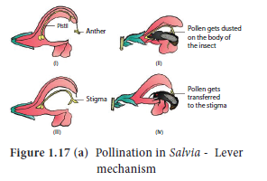
Pollination in Calotropis (Translator mechanism)
This mechanism is found in members of Asclepiadaceae (Apocynaceae as per APG system of classification). The flowers are bisexual with 5 stamens forming gynostegium(union of stigma with the androecium). The stigma is large and 5 –angled and is receptive on the underside. Each stamen at its back possesses a brightly coloured hood like outgrowth enclosing horn shaped nectar. The pollen in each anther lobe of a stamen unites into a mass, forming a pollinium. Pollinia are attached to a clamp or clip like sticky structure called corpusculum. The filamentous or thread like part arising from each pollinium is called retinaculum. The whole structure looks like inverted letter ‘Y’ and is called translator. When the insect visits the flower for nectar, the translator gets attached to the proboscis or leg of the visitor. During the visit to the next flower the pollinia come in contact with the receptive stigma carrying out pollination.
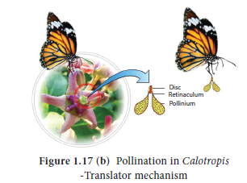
Pollination in Aristolochia (Trap mechanism)
A special mechanism to accomplish pollination called trap mechanism is found in Aristolochia. The flowers are axillary and perianth is tubular with a hood at the top. The basal region is swollen and possesses gynostegium. The gynostegium has six anthers.
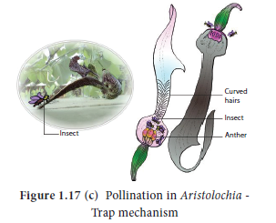
The inner wall of tubular middle part of the perianth is slippery and lined with stiff hairs which are pointed downwards. The young flowers are erect. During this stage small flies enter and could not escape because they are trapped by the hairs. As soon as the anthers of the flower ripe, the hairs wither and flower bents down. The flies escape with pollen and enter another flower where it dusts pollen onthe stigma bringing out pollination.
BOX ITEM: DO YOU KNOW?
Pollination – A composite event
Pollination provides information about evolution, ecology, animal learning and foraging behaviour. Flowers not only supply nectar but also provide microclimate, site and shelter for egg laying insects. The association of insects benefits the flower by getting pollinated and ensures the propagation of its own progeny. The floral parts are well modified in shape, size to attract the pollinators to accomplish pollination.
The relationship between Yucca and moth (Tegeticula yuccasella) is an example for obligate mutualism. The moth bores a hole in the ovary of the flower and lays eggs in it. Then it collects pollen and pushes it in the form of balls down the hollow end of the stigma. Fertilization takes place and seeds develop. Larvae feed on developing seeds. Some seeds remain unconsumed for the propagation of the plant species. It is interesting that the moth cannot survive without Yucca flowers and the plant fails to reproduce sexually without the moth.
Similarly, in Amorphophallus, flowers apart from providing floral rewards, also forms safe site for laying eggs. Many visitors consume pollen and nectar and do not help in pollination. They are called pollen / nectar robbers.
In Bee orchid (Ophrys) the morphology of the flower mimics that of female wasp (Colpa). The male wasp mistakes the flowers for a female wasp and tries to copulate. This act of pseudocopulation helps in polli nation. The pollination in Fig (Ficus carica) by the Wasp (Blastophaga psenes) is also an example for similar Plant – insect interaction.
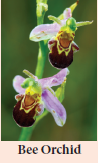
Significance of Pollination
• Pollination is a pre-requisite for the process of fertilisation. Fertilisation helps in the formation of fruits and seeds.
• It brings the male and female gametes closer for the process of fertilisation.
• Cross-pollination introduces variations in plants due to the mixing up of different genes. These variations help the plants to adapt to the environment and results in speciation.
The fusion of male and female gamete is called fertilization. Double fertilization is seen in angiosperms.
Events of fertilization
The stages involved in double fertilization are: - germination of pollen to form pollen tube in the stigma; growth of pollen tube in the style; direction of pollen tube towards the micropyle of the ovule; entry of the pollen tube into one of the synergids of the embryo sac, discharge of male gametes; syngamy and triple fusion. The events from pollen deposition on the stigma to the entry of pollen tube in to the ovule is called pollenpistil interaction. It is a dynamic process which involves recognition of pollen and to promote or inhibit its germination and growth.
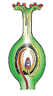
Pollen on the stigma
In nature, a variety of pollens fall on the receptive stigma, but all of them do not germinate and bring out fertilization. The receptive surface of the stigma receives the pollen. If the pollen is compatible with the stigma it germinates to form a tube. This is facilitated by the stigmatic fluid in wet stigma and pellicle in dry stigma. These two also decide the incompatibility and compatibility of the pollen through recognition rejection protein reaction between the pollen and stigma surface. Sexual incompatibility may exist between different species (interspecific) or between members of the same species (intraspecific). The latter is called self-incompatibility. The first visible change in the pollen, soon after it lands on stigma is hydration. The pollen wall proteins are released from the surface. During the germination of pollen its entire content moves into the pollen tube. The growth is restricted to the tip of the tube and all the cytoplasmic contents move to the tip region. The remaining part of the pollen tube is occupied by a vacuole which is cut off from the tip by callose plug. The extreme tip of pollen tube appears hemispherical and transparent when viewed through the microscope. This is called cap block. As soon as the cap block disappear the growth of the pollen tube stops.
Pollen tube in the style
After the germination the pollen tube enters into the style from the stigma. The growth of the pollen tube in the style depends on the type of style.
Types of style
There are three types of style a) Hollow or open style b) solid style or closed style c) semisolid or half-closed style.
Hollow style (Open style): It is common among monocots. A hollow canal running from the stigma to the base of the style is present. The canal is lined by a single layer of glandular canal cells (Transmitting tissue). They secrete mucilaginous substances. The pollen tube grows on the surface of the cells lining the stylar canal. The canal is filled with secretions which serve as nutrition for growing pollen tubes and also controlling incompatibility reaction between the style and pollen tube. The secretions contain carbohydrates, lipids and some enzymes like esterases, acid phosphatases as well as compatibility controlling proteins.
Solid style (Closed type): It is common among dicots. It is characterized by the presence of central core of elongated, highly specialised cells called transmitting tissue. This is equivalent to the lining cells of hollow style and does the same function. Its contents are also similar to the content of those cells. The pollen tube grows through the intercellular spaces of the transmitting tissue.
Semi-solid style (half closed type): This is intermediate between solid and open type.
There is a difference of opinion on the nature of transmitting tissue. Some authors consider that it is found only in solid styles while others consider the lining cells of hollow style also has transmitting tissue.
Entry of pollen tube into the ovule: There are three types of pollen tube entry into the ovule (Figure 1.18).
a) Porogamy: when the pollen tube enters through the micropyle.
b) Chalazogamy: when the pollen tube enters through the chalaza.
c) Mesogamy: when the pollen tube enters through the integument.
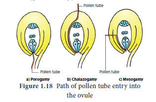
Entry of pollen tube into embryo sac: Irrespective of the place of entry of pollen tube into ovule, it enters the embryo sac at the micropylar end. The pollen enters into embryo sac directly into one of the synergids.
The growth of pollen tube towards the ovary, ovule and embryo sac is due to the presence of chemotropic substances. The pollen tube after travelling the whole length of the style enters into the ovary locule where it is guided towards the micropyle of the ovule by a structure called obturator (See Do you know). After reaching the embryo sac, a pore is formed in pollen tube wall at its apex or just behind the apex. The content of the pollen tube (two male gametes, vegetative nucleus and cytoplasm) are discharged into the synergids into which pollen tube enters. The pollen tube does not grow beyond it, in the embryo sac. The tube nucleus disorganizes.
Box item: do you know?
Obturator may originate from different regions of the ovule (Placenta – Euphorbiaceae, Funiculus- Anacardiaceae, Style–Thymelaeaceae and Ovary wall – Ottelia alismoides).
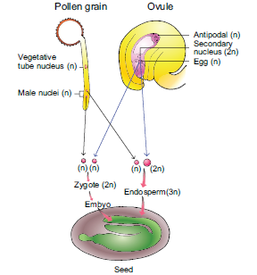
S.G. Nawaschin and L.Guignard in 1898 and 1899, observed in Lilium and Fritillaria that Since this involves the fusion of three nuclei, this phenomenon is called triple fusion. This act results in endosperm formation which forms the nutritive tissue for the embryo.
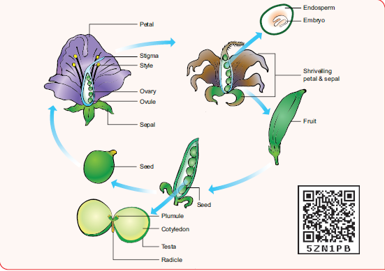
Figure 1.20 Post Ferilization changes in the flower of an angiosperm
both the male gametes released from a male gametophyte are involved in the fertilization. They fertilize two different components of the embryo sac. Since both the male gametes are involved in fertilization, the phenomenon is called double fertilization and is unique to angiosperms. One of the male gametes fuses with the egg nucleus (syngamy) to form Zygote. (Figure 1.19)
The second gamete migrates to the central cell where it fuses with the polar nuclei or their fusion product, the secondary nucleus and forms the primary endosperm nucleus (P E N).
After fertilization, several changes take place in the floral parts up to the formation of the seed (Figure 1.20).
The events after fertilization (endosperm, embryo development, formation of seed, fruits) are called post fertilization changes.
Parts before fertilization |
Transformation after fertilization |
Sepals, petals, stamens, style and stigma |
Usually wither and fall off |
Ovary |
Fruit |
Ovule |
Seed |
Egg |
Zygote |
Funicle |
Stalk of the seed |
Micropyle (ovule) |
Micropyle of the seed (facilitates O2 and water uptake) |
Nucellus |
Perisperm |
Outer integument of ovule |
Testa (outer seed coat) |
Inner integument |
Tegmen (inner seed coat) |
Synergid cells |
Degenerate |
Secondary nucleus |
Endosperm |
Antipodal cells |
Degenerate |
Endosperm
The primary endosperm nucleus (PEN) divides immediately after fertilization but before the zygote starts to divide, to form he endosperm. The primary endosperm nucleus is the result of triple fusion (two polar nuclei and one sperm nucleus) and thus has 3n number of chromosomes. It is a nutritive tissue and regulatory structure that nourishes the developing embryo. Depending upon the mode of development three types of endosperms are recognized in angiosperms. They are nuclear endosperm, cellular endosperm and helobial endosperm (Figure 1.21).
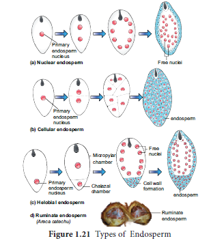
1. Nuclear endosperm: In the nuclear type, the Primary endosperm nucleus (PEN) divides into two without any wall formation. The subsequent division of these two nuclei are free nuclear so that the endosperm consists of only free nuclei and cytoplasm around them. The nuclei may either remain free or may become separate by walls in later stages. Examples: Coccinia, Capsella and Arachis.
Box item: Do you know?
Aleurone tissue consists of highly specialised cells of one or few layers which are found around the endosperm of cereals (barley and maize). Aleurone grain contains sphaerosomes. During seed germination cells secrete certain hydrolytic enzymes like amylases, proteases which digest reserved food material present in the endosperm cells.
2. Cellular endosperm: In this type the primary endosperm nucleus (PEN) divides into 2 nuclei which are immediately followed by a wall formation. Subsequent divisions are also followed by walls. Examples: Adoxa, Helianthus and Scoparia.
3. Helobial endosperm: In helobial type, the primary endosperm nucleus (PEN) moves towards the base of the embryo sac where it divides into two nuclei. These 2 nuclei are separated by a wall to form a large micropylar chamber and a small chalazal chamber. The nucleus of the micropylar chamber undergoes several free nuclear divisions whereas that of the chalazal chamber may or may not divide. Examples: Hydrilla and Vallisneria
The endosperms may either be completely consumed by the developing embryo or it may persist in the mature seeds. Those seeds without endosperms are called non- endospermous
or ex- albuminous seeds. Examples: Pea, Groundnut and Beans. Those seeds with endosperms are called endospermous or albuminous seeds. The endosperms in these seeds supply nutrition to the embryo during seed germination. Examples: Paddy, Coconut and Castor.
Ruminate endosperm: The endosperm with irregularity and unevenness in its surface forms ruminate endosperm (Example: Areca catechu). The activity of the seed coat or the endosperm itself results in this type of endosperm. The unequal radial elongation of the layer of seed coat results in the rumination of endosperm in Passiflora. In Annonaceae and Aristolochiaceae definite ingrowth or infolding of the seed coat produces ruminate endosperm. The irregular surface of the seed coat makes endosperm ruminate in Myristica.
Functions of endosperm:
• It is the nutritive tissue for the developing embryo.
• In majority of angiosperms, the zygote divides only after the development of endosperm.
• Endosperm regulates the precise mode of embryo development.
Endosperm haustoria
Another interesting feature of the endosperm is the presence of haustoria. In the case of helobial endosperm the chalazal chamber itself acts as a haustorial structure. In cellular and nuclear endosperm special structures are produced towards the micropylar, chalazal, both micropylar and chalazal which may be in lateral direction depending on the species. These absorb nutrients from other outer tissue or from ovary tissue and supply them to the growing embryo.
Box item: Do you know?
Coconut milk is a basic nutrient medium which induces the differentiation of embryo (embryoids) and plantlets from various plant tissues. Coconut water from tender coconut is free-nuclear endosperm and white kernel part is cellular.
Embryogenesis
Development of Dicot embryo: The development of Dicot embryo (Capsella bursa-pastoris) is of Onagrad or crucifer type. The embryo develops at micropylar end of embryo sac.
The Zygote divides by a transverse division forming upper or terminal cell and lower or basal cell. The basal cell divides transversely and the terminal cell divides vertically to form a four celled proembryo. A second vertical division right angle to the first one takes place in terminal cell forming a four celled stage called quadrant. A transverse division in the quadrant results in eight cells arranged in two tiers of four each called octant stage.
The upper tier of four cells of the octant is called epibasal or anterior octant and the lower tier of four cells constitute hypobasal or posterior octants. A periclinal division in the octants results in the formation of 16 celled stage with eight cells in the outer and eight in the inner.
The outer eight cells represent the dermatogen and undergoes anticlinal division to produce epidermis. The inner eight cells divide by vertical and transverse division to form outer layer of periblem which give rise to cortex and a central region of pleurome which forms stele
During the development, the two cells of the basal cell undergo several transverse divisions to form a six to ten celled suspensor. The embryo at this stage become globular and the suspensor helps to push the embryo deep into the endosperm. The uppermost cell of the suspensor enlarges to form a haustorium. The lowermost cell of the suspensor is called hypophysis. A transverse division and two vertical division right angle to each other of hypophysis results in the formation of eight cells. The eight cells are arranged in two tiers of four cells each the upper tier give rise to root cap and epidermis. At this stage embryo proper appears heart shaped, cell divisions in the hypocotyl and cotyledon regions of the embryo proper results in elongation.
Further development results in curved horse shoe shaped embryo in the embryo sac. The mature embryo has a radicle, two cotyledons and a plumule (Figure 1.22).
Box item: Activity
Collect the fruits of Tridax (Cypsella). Using a needle dissect out the content, separate the embryo and observe different stages of dicot embryo – globular, torpedo, heart shaped under a dissection microscope.
![1.This is a Zygote. 2.Next the zygote forms a 2 - celled proembryo. It consists of a Terminal cell and Basal cell. 3.Next it forms a 4 celled proembryo.. 4.Then it forms a Globular embryo . It has Embryonal mass, Hypophysis and suspensor. 5.Then the embryonal mass reformed into a heart shaped embryo. It has Embryonal mass, Hypophysis and Suspensor. 6.Finally the mature Embryo formed. It has Cotyledon, Hypophysis, Radicle, Root Cap and Suspensor. 7.This is a mature embryo in a seed. It has Pumule, Cotyledons, Radicle and Root cap.](images/image49.png)
Seed
The fertilized ovule is called seed and possesses an embryo, endosperm and a protective coat. Seeds may be endospermous (wheat, maize, barley and sunflower) or non endospermous. (Bean, Mango, Orchids and cucurbits).
Box item: Do you know?
Fresh weight of an orchid seed may be 20.33 microgram and that of double coconut (Lodoicea maldivica) is about 6 kg.
Cicer seed (example for Dicot seed)
The mature seeds are attached to the fruit wall by a stalk called funiculus. The funiculus disappears leaving a scar called hilum. Below the hilum a small pore called micropyle is present. It facilitates entry of oxygen and water into the seeds during germination. Each seed has a thick outer covering called seed coat. The seed coat is developed from integuments of the ovule. The outer coat is called testa and is hard whereas the inner coat is thin, membranous and is called tegmen. In Pea plant the tegmen and testa are fused. Two cotyledons laterally attached to the embryonic axis and store the food materials in pea whereas in other seeds like castor the endosperm contains reserve food and the cotyledons are thin. The portion of embryonal axis projecting beyond the cotyledons is called radicle or embryonic root. The other end of the axis called embryonic shoot is the plumule. Embryonal axis above the level of cotyledon is called epicotyl whereas the cylindrical region between the level of cotyledon is called hypocotyl (Figure 1.23 a).
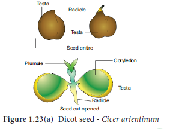
Oryza seed (example for Monocot seed)
The seed of paddy is one seeded and is called Caryopsis. Each seed remains enclosed by a brownish husk which consists of glumes arranged in two rows. The seed coat is a brownish, membranous layer closely adhered to the grain. Endosperm forms the bulk of the grain and is the storage tissue. It is separated from embryo by a definite layer called epithelium. The embryo is small and consists of one shield shaped cotyledon known as scutellum present towards lateral side of embryonal axis. A short axis with plumule and radicle protected by the root cap is present. The plumule is surrounded by a protective sheath called coleoptile. The radicle including root cap is also covered by a protective sheath called coleorhiza. The scutellum supplies the growing embryo with food material absorbed from the endosperm with the help of the epithelium (Figure 1.23 b).
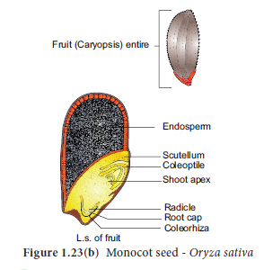
Box item: Activity
Soak seeds of green gram for three hours. Drain the water and place few seeds in a clean tray containing moist cotton or filter paper. Allow the seeds to sprout. Collect the sprouted seeds, cut open and observe the parts. Record your observation.
Reproduction involving fertilization in flowering plants is called amphimixis and wherever reproduction does not involve union of male and female gametes is called apomixis.
The term Apomixis was introduced by Winkler in the year 1908. It is defined as the substitution of the usual sexual system (Amphimixis) by a form of reproduction which does not involve meiosis and syngamy.
Maheswari (1950) classified Apomixis into two types - Recurrent and Non recurrent
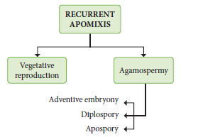
1. Vegetative reproduction: Plants propagate by any part other than seeds Bulbils – Fritillaria imperialis; Bulbs – Allium; Runner – Mentha arvensis; Sucker – Chrysanthemum
2. Agamospermy: It refers to processes by which Embryos are formed by eliminating meiosis and syngamy.
a. Adventive embryony: An Embryo arises directly from the diploid sporophytic cells either from nucellus or integument. It is also called sporophytic budding because gametophytic phase is completely absent. Adventive embryos are found in Citrus and Mangifera
b. Diplospory : A diploid embryo sac is formed from megaspore mother cell without a regular meiotic division Examples. Eupatorium and Aerva.
c. Apospory: Megaspore mother cell (MMC) undergoes the normal meiosis and four megaspores formed gradually disappear. A nucellar cell becomes activated and develops into a diploid embryo sac. This type of apospory is also called somatic apospory. Examples Hieracium and Parthenium.
Occurrence of more than one embryo in a seed is called polyembryony (Figure 1.24). The first case of polyembryony was reported in certain oranges by Anton von Leeuwenhoek in the year 1719. Polyembryony is divided into four categories based on its origin.
serial number a. Cleavage polyembryony (Example: Orchids)
serial number b. Formation of embryo by cells of the Embryo sac other than egg (Synergids – Aristolochia; antipodals – Ulmus and endosperm – Balanophora)
serial number c. Development of more than one Embryo sac within the same ovule. (Derivatives of same MMC[Microspore mother cell], derivatives of two or more MMC[Microspore mother cell] – Casuarina)
serial number d. Activation of some sporophytic cells of the ovule (Nucellus/ integuments-Citrus and Syzygium).
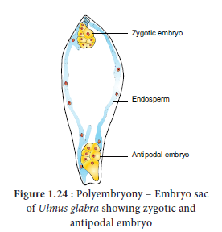
Practical applications
The seedlings formed from the nucellar tissue in Citrus are found better clones for Orchards. Embryos derived through polyembryony are found virus free.
As mentioned earlier, the ovary becomes the fruit and the ovule becomes the seed after fertilization. However, in a number of cases, fruit like structures may develop from the ovary without the act of fertilization. Such fruits are called parthenocarpic fruits. Invariably they will not have true seeds.
Many commercial fruits are made seedless. Examples: Banana, Grapes and Papaya.
Significance
Reproduction is one of the attributes of living things. Lower plants, microbes and animals reproduce by different methods (fragmentation, gemma, binary fission, budding, regeneration). Organisms reproduce through asexual and sexual methods. Asexual methods in angiosperms occur through natural or artificial methods. The natural methods take place through vegetative propagules or diaspores. Artificial method of reproduction involves cutting, layering and grafting. Micropropagation is a modern method used to raise new plants.
Sexual reproduction includes gametogenesis and fertilization. External fertilization occurs in lower plants like algae but in higher plants internal fertilization takes place. A flower is a modified shoot meant for reproduction. Stamen is the male reproductive part and produces pollen grains. The development of microspore is called microsporogenesis. The microspore mother cell undergoes meiotic division to produce four haploid microspores. In majority of Angiosperms the anther is dithecous and are tetrasporangiate. It possesses epidermis, endothecium, middle layers and tapetum. The hygroscopic nature of endothecial cell along with thin walled stomium helps in the dehiscence of anther. Tapetum nourishes the microspores and also contributes to the wall materials of the pollen grain. Pollen grain is derived from the microspore and possesses thin inner intine and thick outer exine. Sporopollenin is present in exine and is resistant to physiological and biological decomposition. Microspore is the first cell of male gametophyte. The nucleus of the microspore divides to form a vegetative nucleus and a generative nucleus. The generative nucleus divides to form two male nuclei. Gynoecium is the female reproductive part of a flower and it represents one or more pistils. The ovary bears ovules which are attached to the placenta. There are six major types of ovules. The development of megaspore from megaspore mother cell is called megasporogenesis. A monosporic embryo sac (Polygonum type) possesses three antipodals in chalazal end, three cells in the micropylar end constituting egg apparatus (1 egg and 2 Synergids) and two polar nuclei fused to form secondary nucleus. Thus, a 7 celled 8 nucleated Embryo sac is present.
The transfer of pollen grains to the stigma of a flower is called pollination. Self-pollination and cross-pollination are two types of pollination. Double fertilization and triple fusion are characteristic features of angiosperms. After fertilization the ovary transforms into a fruit and the ovule becomes a seed. Endosperm is triploid in angiosperms and is of three types – Nuclear, cellular, helical. Reproduction which doesn’t involve meiosis and syngamy is called apomixis. Occurrence of more than one embryo in a seed is called polyembryony. Formation of fruit without the act of fertilization is called parthenocarpy.
1. Choose the correct statement from the following
a) Gametes are involved in asexual reproduction
b) Bacteria reproduce asexually by budding
c) Conidia formation is a method of sexual reproduction
d) Yeast reproduces by budding
2. An eminent Indian embryologist is
a) S.R.Kashyap
b) P.Maheswari
c) M.S. Swaminathan
d) K.C.Mehta
3. Identify the correctly matched pair
a) Tuber - Allium cepa
b) Sucker - Pistia
c) Rhizome - Musa
d) Stolon – Zingiber
4. Size of pollen grain in Myosotis
a) 10 micrometer
b) 20 micrometer
c) 200 micrometer
d) 2000 micrometer
5. First cell of male gametophyte in angiosperm is
a) Microspore
b) megaspore
c) Nucleus
d) Primary Endosperm Nucleus
6. Match the following
1) External fertilization |
1) pollen grain |
2) Androecium |
2) anther wall |
3) Male gametophyte |
3) algae |
4) Primary parietal layer |
4) stamens |
a) 2-4 2-1 3-2 4-3
b) 2-3 2-4 3-1 4-2
c) 1-3 2-4 3-2 4-1
d) 1-3 2-1 3-4 4-2
7. Arrange the layers of anther wall from locus to periphery
a) Epidermis, middle layers, tapetum, endothecium
b) Tapetum, middle layers, epidermis, endothecium
c) Endothecium, epidermis, middle layers, tapetum
d) Tapetum, middle layers endothecium epidermis
8. Identify the incorrect pair
a) sporopollenin - exine of pollen grain
b) tapetum – nutritive tissue for developing microspores
c) Nucellus – nutritive tissue for developing embryo
d) obturator – directs the pollen tube into micropyle
9. Assertion: Sporopollenin preserves pollen in fossil deposits
Reason: Sporopollenin is resistant to physical and biological decomposition
a) assertion is true; reason is false
b) assertion is false; reason is true
c) Both Assertion and reason are not true
d) Both Assertion and reason are true.
10. Choose the correct statement(s) about tenuinucellate ovule
a) Sporogenous cell is hypodermal
b) Ovules have fairly large nucellus
c) sporogenous cell is epidermal
d) ovules have single layer of nucellus tissue
11. The correct order of haploid, diploid and triploid structure in fertilized embryo sac is
a) synergid, zygote and primary endosperm nucleus (PEN)
b) synergid, antipodal and polar nuclei
c) antipodal, synergid and primary endosperm nucleus (PEN)
d) synergid, polar nuclei and zygote
12. Which of the following represent megagametophyte
a) Ovule
b) Embryo sac
c)Nucellus
d)Endosperm
13. In Haplopappus gracilis, number of chromosomes in cells of nucellus is 4. What will be the chromosome number in Primary endosperm cell?
a)8
b)12
c)6
d)2
14. Transmitting tissue is found in
a) Micropylar region of ovule
b) Pollen tube wall
c) Stylar region of gynoecium
d) Integument
15. The scar left by funiculus in the seed is
a) tegmen
b) radicle
c)epicotyl
d)hilum
16. A Plant called X possesses small flower with reduced perianth and versatile anther. The probable agent for pollination would be
a) water
b) air
c)butterflies
d)beetles
17. Consider the following statement(s)
1) In Protandrous flowers pistil matures earlier
ii) In Protogynous flowers pistil matures earlier
iii) Herkogamy is noticed in unisexual flowers
iv) Distyly is present in Primula
a) 1 and ii are correct
b) ii and iv are correct
c) ii and iii are correct
d) 1 and iv are correct
18. Ruminate endosperm is found in
a) Cocos
b) Areca
c) Vallisneria
d)Arachis
19. Coelorhiza is found in
a) Paddy
b) Bean
c) Pea
d)Tridax
20. Caruncle develops from
a) funicle
b) nucellus
c) integument
d) embryo sac
21. Parthenocarpic fruits lack
a) Endocarp
b) Epicarp
c) Mesocarp
d) seed
22. In majority of plants pollen is liberated at
a) 1 celled stage
b) 2 celled stages
c) 3 celled stages
d) 4 celled stages
23. What is reproduction?
24. List out two sub-aerial stem modifications with example.
25. What is layering?
26. What are clones?
27. How do Dioscorea reproduce vegetatively?
28. A detached leaf of Bryophyllum produces new plants. How?
29. Differentiate Grafting and Layering.
30. Write short notes on approach grafting.
31. “Tissue culture is the best method for propagating rare and endangered plant species”- Discuss.
32. Distinguish mound layering and air layering.
33. List down the advantages of conventional methods.
34. Explain the conventional methods adopted in vegetative propagation of higher plants.
35. Differentiate Secretary and invasive tapetum.
36. What is Cantharophily.
37. List any two-strategy adopted by bisexual flowers to prevent self-pollination.
38. What is endothelium.
39. Name the cell which divides to form male nuclei.
40. ‘The endosperm of angiosperm is different from gymnosperm’. Do you agree. Justify your answer.
41. Define the term Diplospory.
42. What is polyembryony. How it can commercially exploit.
43. Do you think parthenocarpy and apomixis are different process. Justify?
44. Why does the zygote divides only after the division of Primary endosperm cell.
45. What is Mellitophily?
46. Give examples for Helobial endosperm.
47. ‘Endothecium is associated with dehiscence of anther’ Justify the statement.
48. List out the functions of tapetum.
49. Write short note on Pollen kitt.
50. Distinguish tenuinucellate and crassinucellate ovules.
51. Give short notes on types of ovules.
52. ‘Pollination in Gymnosperms is different from Angiosperms’ – Give reasons.
53. Write short note on Heterostyly.
54. Enumerate the characteristic features of Entomophilous flowers
55. Explain the pollination mechanism in Salvia.
56. Discuss the steps involved in Microsporogenesis.
57. With a suitable diagram explain the structure of an ovule.
58. Give a concise account on steps involved in fertilization of an angiosperm plant.
59. What is endosperm. Explain the types.
60. Explain the development of a Dicot embryo
61. Differentiate the structure of Dicot and Monocot seed.
62. Give a detailed account on parthenocarpy. Add a note on its significance.
Apospory: The process of embryo sac formation from diploid cells of nucellus as a result of mitosis
Budding: A method of asexual reproduction where small outgrowth (Bud) from a parent cell is produced
Callus: Undifferentiated mass of cells obtained through tissue culture.
Clone: Genetically identical individuals.
Endothecium: A single layer of hygroscopic, radially elongated cells found below the epidermis of anther which helps in dehiscence of anther.
Fertilization: The act of fusion of male and female gamete
Grafting: Conventional method of reproduction where stock and scion are joined to produce new plant.
Horticulture: Branch of plant science that deals with the art of growing fruits, vegetables, flowers and ornamental plants.
Nucellus: The diploid tissue found on the inner part of ovule next to the integuments.
Pollenkitt: A sticky covering found on the surface of the pollen that helps to attract insects.
Regeneration: Ability of organisms to replace or restore the lost parts.
Sporopollenin: Pollen wall material derived from carotenoids and is resistant to physical and biological decomposition.
Tapetum: Nutritive tissue for the developing sporogenous tissue
Transmitting tissue: A single layer of glandular canal cells lining the inner part of style.
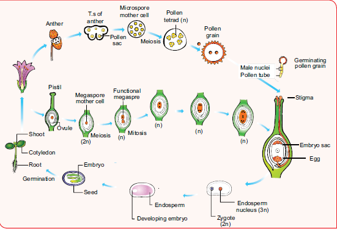
Box item: do you know?
Pollen calendar shows the production of pollen by plants during different seasons. This benefits the allergic persons. Pollen grains cause allergic reactions like asthma, bronchitis, hay fever, allergic rhinitis etc., Parthenium hysterophorus L. (Family-Asteraceae) is commonly called Carrot grass is a native of tropical America and was introduced into India as a contaminant along with cereal wheat. The pollen of this plant cause Allergy.
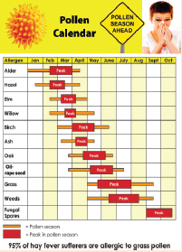
Box item: More to know?
• The receptacle becomes fleshy and edible around the fruit enclosing the seeds as in Pyrus malus (apple)
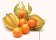
Physalis - Persistent calyx
• The calyx may persist and enlarge (Solanum melongena) or may cover the fruit (Physalis minima)
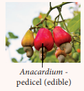
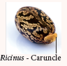
• The funiculus develops into a fleshy structure which is often very colourful and called aril. (Myristica and Pithecellobium)
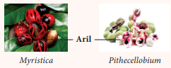
• The nucellar tissue is either absorbed completely by the developing embryo sac and embryo or small portion may remain as storage tissue. Thus, the remnant of nucellar tissue in the seed is called perisperm. Example: Black pepper and beet root.